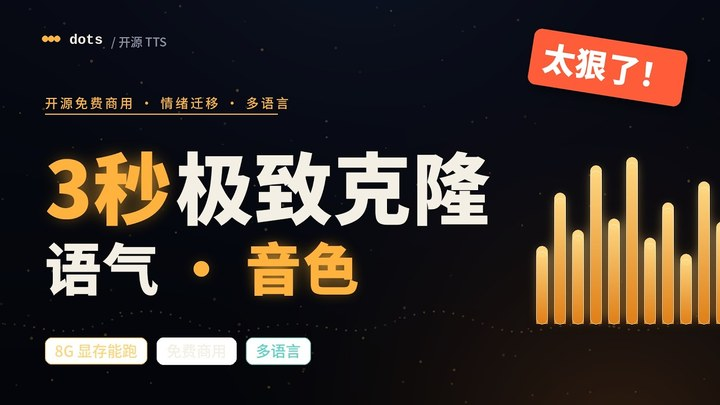

把一小段录音变成可迁移的语音模板：保留音色、迁移情绪、支持跨语言朗读，适合研究、创作和原型验证。

dots.tts 把“音色克隆”压缩成了一个极低门槛的开源工作流：几秒录音即可复刻说话人的声音特征，并把原始音频里的情绪、语气和部分风格一起迁移到目标语言里；它不是单纯的 TTS，而是“跨语言声音再表达”。
仅用少量录音提取说话人特征，适合快速验证、Demo 和低成本原型。
英/法/韩等多语言朗读时，尽量保留原始语气，比如撒娇、伤心、拖长音等表达方式。
2B 参数骨干配合语义编码器、LLM 与声学头，走的是连续式路线，不依赖离散 token 堆叠。
在 Seed-TTS-Eval 和 MiniMax 24 语言基准上给出强结果，适合做研究参考和二次开发底座。
| 基准 | 指标 | 结果 |
|---|---|---|
| Seed-TTS-Eval 中文 | WER / SIM | 0.94% / 81.0 开源最佳 |
| Seed-TTS-Eval 英文 | WER / SIM | 1.30% / 77.1 |
| Seed-TTS-Eval 中文困难集 | WER / SIM | 6.60% / 79.5 |
| MiniMax 24 语言 | 平均 speaker 相似度 | 83.9 开源最高 |
音色克隆技术可能被用于深度伪造、冒充和欺诈。请只在合法、可授权的场景中使用，并明确告知合成语音的来源与用途。研究能力越强，越需要严格边界。